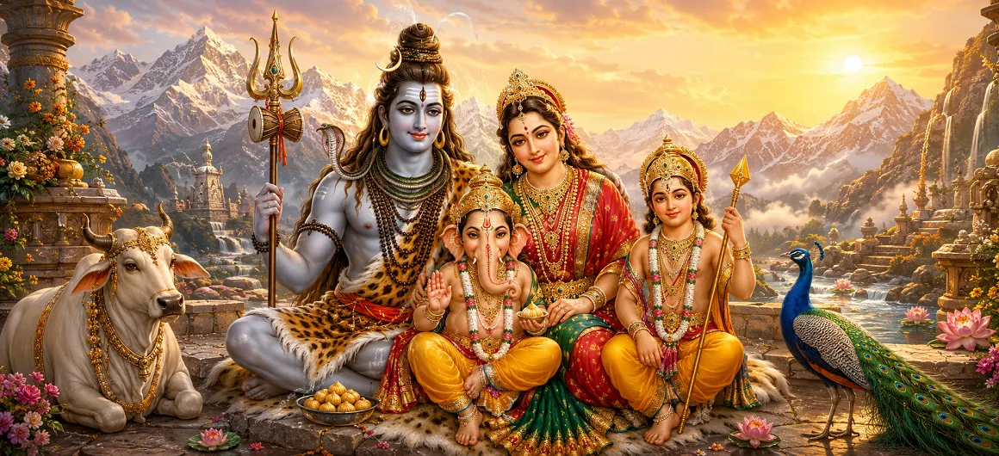

Lord Shiva and the Divine Family
ভগবান শিব ও দিব্য পরিবার
भगवान शिव और दिव्य परिवार
The divine family of Lord Shiva brings together some of the most beloved forms in Hindu tradition: Mahadeva, Goddess Parvati, Lord Ganesha and Lord Kartikeya. Nandi, the faithful bull and vahana of Shiva, stands close to this sacred household. Together they present a powerful vision of family life shaped by wisdom, courage, devotion, protection and spiritual purpose.
प्रत्येक सदस्य की एक विशिष्ट प्रकृति और पवित्र भूमिका होती है। शिव शांति और अतिक्रमण का प्रतीक हैं, पार्वती शक्ति और दयालु शक्ति व्यक्त करती हैं, गणेश ज्ञान के साथ शुरुआत का मार्गदर्शन करते हैं, और कार्तिकेय अनुशासित साहस का प्रतिनिधित्व करते हैं। उनके मतभेद घर को विभाजित नहीं करते; वे बताते हैं कि कैसे विविध गुण एक पवित्र एकता से संबंधित हो सकते हैं।
शिव के दिव्य परिवार के छह पवित्र आयाम
शिव की स्थिरता
महादेव दिव्य परिवार के हृदय में ध्यान, वैराग्य और आंतरिक स्वतंत्रता की शक्ति लाते हैं।
पार्वती की शक्ति
दिव्य माँ प्रेमपूर्ण शक्ति, दृढ़ता, पालन-पोषण और उस ऊर्जा का प्रतीक है जो पवित्र पारिवारिक जीवन को बनाए रखती है।
गणेश जी की बुद्धि
गणेश नई शुरुआत का आशीर्वाद देते हैं और विचारशील कार्य, विवेक, विनम्रता और बाधाओं पर काबू पाना सिखाते हैं।
कार्तिकेय का साहस
दिव्य सेनापति केंद्रित ऊर्जा, महान नेतृत्व और विनाशकारी ताकतों के खिलाफ खड़े होने के साहस का प्रतिनिधित्व करता है।
नंदी की भक्ति
शिव के समक्ष नंदी की चौकस उपस्थिति निष्ठा, धैर्य और संपूर्ण हृदय से भक्ति की एक प्रतिष्ठित छवि है।
कैलाश में एकता
कैलाश एक पवित्र घर बन जाता है जहां विभिन्न स्वभावों और कर्तव्यों को प्रेम और धर्म द्वारा एक साथ रखा जाता है।
शिव के दिव्य परिवार से मिलें
महादेव, परिवार के केंद्र
भगवान शिव को महान योगी के रूप में मनाया जाता है जो ध्यान में रहते हैं और एक दयालु गृहस्थ के रूप में जो पार्वती और उनके बच्चों के साथ जीवन साझा करते हैं। ये दोनों आयाम विपरीत नहीं हैं। वे दिखाते हैं कि प्यार, कर्तव्य और रिश्ते के बीच भी आंतरिक स्वतंत्रता मौजूद रह सकती है।
दिव्य परिवार के भीतर, महादेव अपने निकटतम लोगों की रक्षा करते हैं, शिक्षा देते हैं और कभी-कभी उनका परीक्षण भी करते हैं। उनकी उपस्थिति भक्तों को याद दिलाती है कि सच्ची सत्ता सादगी, आत्म-निपुणता और करुणा से जुड़ी है।
पार्वती, दिव्य माता
देवी पार्वती को शिव की पत्नी और शक्ति की अभिव्यक्ति के रूप में पूजा जाता है, वह दिव्य शक्ति जिसके माध्यम से जीवन का पोषण और परिवर्तन होता है। कैलाश के घराने में उसे कोमलता, दृढ़ संकल्प, सुरक्षा और मातृशक्ति के कारण याद किया जाता है।
उनकी कहानियाँ बताती हैं कि करुणा कमज़ोरी नहीं है। दिव्य माँ की देखभाल आवश्यकता के अनुसार कोमल, अनुशासित या अत्यधिक सुरक्षात्मक हो सकती है। वह घर को ताकत और बुद्धि से मार्गदर्शन करते हुए गर्माहट देती है।
गणेश, शुभारंभ के देवता
शिव और पार्वती के हाथी के सिर वाले पुत्र भगवान गणेश का नए कार्यों से पहले व्यापक रूप से आह्वान किया जाता है। बाधाओं को दूर करने वाले और शुरुआत के स्वामी के रूप में, वह सिखाते हैं कि प्रगति के लिए बुद्धिमत्ता, धैर्य और हमारे भीतर और आसपास की वास्तविक बाधा को पहचानने की क्षमता की आवश्यकता होती है।
गणेश के बड़े सिर को लोकप्रिय रूप से ज्ञान के रूप में माना जाता है, उनके चौड़े कानों को ध्यान से सुनने के रूप में और उनके सौम्य रूप को दयालुता से निर्देशित शक्ति के रूप में माना जाता है। परिवार में उनका स्थान विचारशील कार्य और माता-पिता के प्रति सम्मान का प्रतीक है।
कार्तिकेय, दिव्य योद्धा
कार्तिकेय शिव और पार्वती के योद्धा पुत्र हैं, जिन्हें विभिन्न परंपराओं में स्कंद, कुमार, मुरुगन और सुब्रह्मण्य जैसे नामों से जाना जाता है। अक्सर मोर और एक दिव्य भाले से जुड़ा हुआ, वह युवा प्रतिभा, अनुशासन और हानिकारक ताकतों पर जीत का प्रतिनिधित्व करता है।
उनका साहस लक्ष्यहीन आक्रामकता नहीं है. यह धर्म द्वारा निर्देशित ऊर्जा है। कार्तिकेय भक्तों को याद दिलाते हैं कि आध्यात्मिक जीवन में भय और अन्याय का सामना करने के लिए स्पष्टता, नेतृत्व और साहस की भी आवश्यकता होती है।
नंदी, निष्ठावान साथी
नंदी भगवान शिव का पवित्र बैल और वाहन है, जिसे पारंपरिक रूप से मंदिरों में शिवलिंग की ओर मुख करके देखा जाता है। महादेव की ओर उनकी स्थिर दृष्टि एकाग्रता, निष्ठा और भक्ति की एक प्रिय छवि बन गई है जो अपने चुने हुए आदर्श से दूर नहीं जाती है।
अभिभावक और परिचारक के रूप में, नंदी रोगी सेवा का भी प्रतिनिधित्व करते हैं। उनकी उपस्थिति सिखाती है कि कोई न केवल भव्य कार्रवाई के माध्यम से बल्कि निरंतरता, तत्परता और शांत ध्यान के माध्यम से पवित्र तक पहुंच सकता है।
कैलाश का दिव्य गृहस्थ जीवन
कैलाश को बर्फ़ जैसी चमकीली शांति के स्थान के रूप में याद किया जाता है, फिर भी शिव के परिवार की कहानियाँ इसे संवाद, स्नेह, खेल, अनुशासन और दिव्य उद्देश्य से भर देती हैं। परिवार पवित्र है इसलिए नहीं कि हर कहानी संघर्ष से मुक्त है, बल्कि इसलिए कि कठिनाई शिक्षण, मेल-मिलाप और परिवर्तन का स्रोत बन सकती है।
परिवार चिंतनशील और सक्रिय, सौम्य और वीर, माता-पिता और बच्चों जैसे लोगों को अपनाता है। इसकी एकता भक्तों को प्रेम, जिम्मेदारी और एक साझा आध्यात्मिक केंद्र से जुड़े रहते हुए मतभेदों का सम्मान करने के लिए आमंत्रित करती है।
शिव का दिव्य परिवार भक्त को क्या सिखाता है
भिन्नता में एकता
एक पवित्र परिवार को वैयक्तिकता को मिटाने की आवश्यकता नहीं है; जब विभिन्न उपहार साझा भलाई के लिए काम करते हैं तो सद्भाव बढ़ता है।
भक्ति
नंदी की स्थिरता और परिवार की श्रद्धा परमात्मा के प्रति निष्ठापूर्वक ध्यान देना सिखाती है।
कार्रवाई से पहले बुद्धि
गणेश भक्तों को जल्दबाजी के बजाय विवेक से शुरुआत करने की याद दिलाते हैं।
धर्म के साथ साहस
कार्तिकेय दिखाते हैं कि स्पष्टता और धार्मिक उद्देश्य द्वारा निर्देशित होने पर शक्ति पवित्र हो जाती है।
प्यारी जिम्मेदारी
शिव और पार्वती बताते हैं कि प्रेम में मार्गदर्शन, सुरक्षा, धैर्य और जवाबदेही शामिल है।
संतुलन
कैलाश परिवार एक आध्यात्मिक जीवन में ध्यान, सेवा, परिवार और उद्देश्यपूर्ण कार्रवाई लाता है।
"शिव हमें शांति दें, पार्वती हमें शक्ति दें, गणेश हमें बुद्धि दें, कार्तिकेय हमें साहस दें, और नंदी हमें अटूट भक्ति सिखाएं।"
अक्सर पूछे जाने वाले प्रश्न
भगवान शिव के दिव्य परिवार से कौन संबंधित है?
शिव के दिव्य परिवार का प्रतिनिधित्व आमतौर पर भगवान शिव, देवी पार्वती और उनके पुत्र गणेश और कार्तिकेय करते हैं। शिव के समर्पित बैल और वाहन नंदी भी घर-परिवार से निकटता से जुड़े हुए हैं।
भगवान गणेश क्या दर्शाते हैं?
गणेश को व्यापक रूप से बाधाओं को दूर करने वाले, शुरुआत के स्वामी और ज्ञान, विवेक और शुभता के देवता के रूप में पूजा जाता है।
शिव के परिवार में कार्तिकेय कौन हैं?
कार्तिकेय शिव और पार्वती के दिव्य योद्धा पुत्र हैं। उन्हें विभिन्न परंपराओं में स्कंद, कुमार, मुरुगन और सुब्रह्मण्य के नाम से भी जाना जाता है।
शिव का दिव्य परिवार भक्तों को क्या सिखाता है?
दिव्य परिवार ज्ञान, साहस, भक्ति, धैर्य, प्रेमपूर्ण जिम्मेदारी और एकता को प्रेरित करता है जो प्रत्येक सदस्य के विभिन्न गुणों का सम्मान करता है।